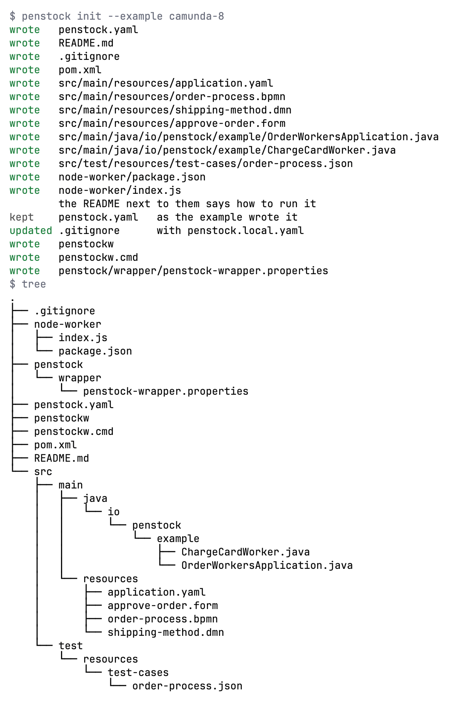

Guide / Start here
The example project
A small order process that runs from the first minute, so you can see every part of Penstock work on something real.
What it is
The example is an order process. A user approves the order. A worker charges the card. A decision picks the shipping method. The process waits for a message that the parcel has shipped. Then a receipt is sent. If the card is declined, the order ends early.
There are two versions. Pick the engine you use.
| Camunda 8 | Camunda 7 | |
|---|---|---|
| Card is charged by | A Spring Boot job worker for the job type charge-card | An external task worker for the topic charge-card, a plain Java client in worker/ |
| Receipt is sent by | A Node job worker for the job type send-receipt | A Java delegate, SendReceiptDelegate |
| Engine | You run one, for example Camunda 8 Run | Part of the example: a Spring Boot app with the engine, the REST API and the web apps on an in-memory database |
| Deployment address | http://localhost:8080/v2 | http://localhost:8080/engine-rest |
Write it into a folder
Write the example into an empty folder. If the folder is not empty, Penstock stops and writes nothing. It never overwrites your files. A .git folder does not count as content. Penstock also adds the penstockw wrapper scripts and adds penstock.local.yaml to .gitignore.
Write the example
JetBrains
Open an empty project and open the Penstock tool window. It offers Camunda 8 order process and Camunda 7 order process. Press one and confirm the dialog Start from an example with Create. A notification says where the example is.
Command line
In an empty folder run penstock init --example camunda-8, or --example camunda-7. It writes the files and the penstockw wrapper.
penstock init --example camunda-8VS Code
Not available in VS Code. VS Code cannot write the example, because the project tree that offers it is not part of the extension. Run penstock init --example camunda-8 (or camunda-7) in an empty folder, then open the folder in VS Code.

The files
| File | What it is |
|---|---|
src/main/resources/order-process.bpmn | The process |
src/main/resources/shipping-method.dmn | The decision. It picks express, standard or international from the country and the amount. |
src/main/resources/approve-order.form | The Camunda Form of the user task |
src/test/resources/test-cases/order-process.json | Three test cases in the Camunda test-case format |
penstock.yaml | The engine and where to deploy. See penstock.yaml |
README.md | The commands to run it against a local engine |
pom.xml, application.yaml | The Maven build and Spring Boot settings |
Run it
The README written into the folder has the exact commands and versions. In short:
- Start the engine. On Camunda 8, start Camunda 8 Run. On Camunda 7, run
mvn spring-boot:run. The web apps open athttp://localhost:8080. The login isdemoanddemo. - Look at the diagrams and check them. See Getting started.
- Deploy the process, the decision and the form. See Deployment. On Camunda 7 they are also deployed when the app starts.
- Start the workers, each in its own terminal.
- Start an order. A home order under 1000 is paid and ships standard. Use
"amount": 5000to see the card declined. - Approve it in Tasklist, then send the message
shipment-confirmedto tell the process the parcel has shipped.
Run the scenarios
The example has three scenarios. Running them deploys a test build, mocks the workers and runs them against your local engine. The first run on a local engine asks once whether it may. See Scenarios.
- A home order is approved, paid, shipped standard and completed.
- An order from abroad ships internationally.
- A declined card ends the order without a shipment.
Run the three scenarios
JetBrains
Open order-process.json and press the green triangle in the gutter next to a scenario. The IDE test runner shows the result. Or press Scenarios on the diagram's toolbar. See Tests in the IDE.
Command line
penstock scenarios run .See Every command.
VS Code
Open the Testing view. Penstock lists a node for the diagram and one for each test case in order-process.json. Run them there, or press Scenarios on the diagram's toolbar. Pro. See Where things are in VS Code.
What you see
- The check finds nothing wrong. Every task has a worker, the decision and the form exist, and the drawing is clean.
- The project model shows the process with its workers, its message, its decision, its form and its error code. See Your project as a model.
- The process has two ways through it: the order completes, or the card is declined.
What it looks like
JetBrains
Open the Penstock tool window. Under Processes the order process lists its tests. Under Workers you see charge-card and the others. See The Penstock tool window.
Command line
$ penstock check .
ok src/main/resources/approve-order.form
ok src/main/resources/order-process.bpmn
ok src/main/resources/shipping-method.dmn
$ penstock scenarios list .
src/main/resources/order-process.bpmn 2 scenario(s)
1. Order received → Approve order → Charge card → Decide shipping method → Shipment confirmed → Send receipt → Order completed
2. Order received → Approve order → Charge card → Card declined → Payment declined
Card declined fires on Charge cardVS Code
Open the Code view in the Explorer. With Pro, Processes lists the order process and Workers lists charge-card and the others. The Testing view lists the test cases. See Code links in VS Code.
Common problems
- "is not empty. An example is written into an empty folder"
- Run the command in a new, empty folder. Penstock refuses to write into a folder that has files, so nothing of yours is overwritten.
- "Unknown example"
- The only names are
camunda-8andcamunda-7. - Deploy says the engine is not reachable.
- Start the engine first, and check
deployment.urlinpenstock.yaml. See Deployment. - The scenarios ask a question the first time.
- Scenarios deploy a test build. On a local engine Penstock asks once before it does. See Scenarios.